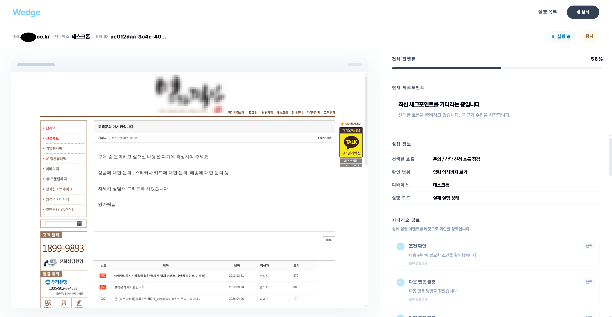
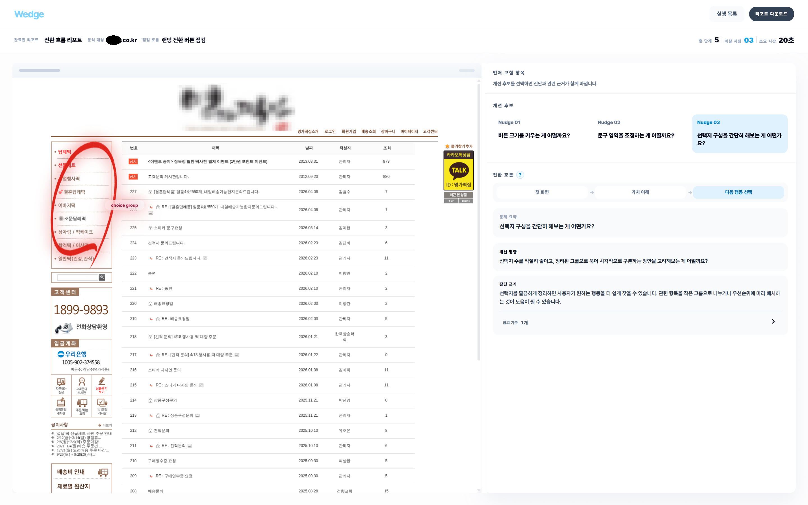

테스트 실행

분석 요청이 처리되는 흐름
사용자의 분석 요청이 저장되고, 작업 큐를 거쳐 브라우저 실행·분석 처리 결과가 다시 상태로 반영되는 구조입니다.
사용자 분석 요청웹 화면에서 URL과 분석 조건 입력
→
Spring API Server요청 저장 · 실행 상태 생성
↓
Analysis Outbox전달 대기 작업 기록 · 재시도 기준
→
작업 큐브라우저 실행기와 분석 처리기로 작업 전달
↓
브라우저 실행 · 분석 처리화면 실행, 캡쳐, 판단 결과 생성
→
진행 상태 업데이트진행/완료/실패 상태를 서버 DB에 반영
핵심은 요청 저장, 작업 전달, 진행 상태 반영이 중간에 끊기지 않도록 연결한 것입니다.
리포트 생성 대기 시간 개선
사용자가 분석 완료를 기다리는 시간을 줄이기 위해, 오래 걸리는 이미지 판단 구간을 병렬 처리하고 결과 동일성을 확인했습니다.
Wedge 리포트 화면

분석 결과 화면리포트 생성 완료
첫 번째 개선
84.0s → 63.5s
화면 3개를 일부 동시에 확인약 24.4% 단축
두 번째 개선
63.5s → 42.3s
63.5초 기준 환산약 33.4% 단축
ARCH Wedge Architecture